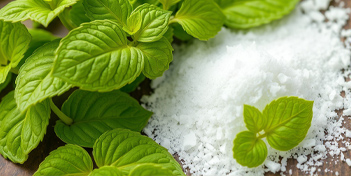

Alternatives to Aspartame: Understanding Sugar and Natural Sweeteners
Explore healthier options for sweetening your food, and learn about the history of sugar compared to artificial sweeteners like aspartame.
Introduction
Aspartame has been a widely used artificial sweetener since it was approved in 1981. However, there are growing concerns about its health effects, prompting many to seek safer alternatives. This post explores various natural sweeteners, their benefits, and the history of sugar, which humans have consumed for centuries compared to artificial chemicals like aspartame, which have only been around for a few decades. You can also learn more in our "What is Aspartame?" blog post.
The History of Sugar Consumption
Sugar has been an integral part of human diets for thousands of years. The earliest cultivation of sugarcane dates back to around 500 B.C. in Southeast Asia. By the 16th century, sugar had become a highly sought-after commodity worldwide. Unlike modern artificial sweeteners, sugar is a natural substance that has undergone considerable scrutiny over centuries of human consumption.
While sugar consumption is not without its health concerns, including the risk of obesity, diabetes, and dental issues, it is well understood, and the long-term effects are widely documented. Comparatively, aspartame and other artificial sweeteners have only been in use for less than 100 years, and the potential long-term health impacts are still debated.
Natural Alternatives to Aspartame
Stevia
Stevia is a natural sweetener derived from the leaves of the Stevia rebaudiana plant. It is about 200-300 times sweeter than sugar but contains no calories, making it a popular choice for those looking to reduce calorie intake without sacrificing sweetness. Unlike aspartame, stevia is a natural product, and research suggests it may even have some health benefits, such as lowering blood sugar levels and improving insulin sensitivity.(1)
Monk Fruit Extract
Monk fruit extract, also known as luo han guo, is another popular natural sweetener. It is derived from the monk fruit and is also significantly sweeter than sugar. Monk fruit contains mogrosides, which provide sweetness without impacting blood sugar levels, making it suitable for diabetics. Unlike aspartame, monk fruit extract does not contain methanol or phenylalanine, making it a safer alternative for some individuals.(2)
Honey
Honey is one of the oldest natural sweeteners known to humanity. It has been used for thousands of years not only for its sweet taste but also for its medicinal properties. Honey contains a range of vitamins, minerals, and antioxidants, making it a more nutrient-dense choice compared to refined sugar or artificial sweeteners like aspartame.(3)
Maple Syrup
Maple syrup is another natural sweetener that comes from the sap of sugar maple trees. It contains a small amount of vitamins and minerals, as well as antioxidants. Though it is still a source of sugar, its natural composition and trace nutrients make it a preferable option for those looking for an unrefined, natural sweetener.(4)
Date Sugar
Date sugar is made from dehydrated, ground dates and contains all of the fruit's nutrients, including fiber. It is less processed than most other sweeteners and provides a more natural way to sweeten foods without the synthetic additives found in artificial sweeteners.(5)
Artificial Sweeteners vs. Natural Alternatives
Artificial sweeteners like aspartame, saccharin, and sucralose are chemically synthesized and have been in use for less than a century. While they offer calorie-free sweetness, their long-term health effects are still debated, and concerns about potential risks like cancer, neurological effects, and metabolic impacts persist.
In contrast, natural alternatives such as stevia, monk fruit, and honey are plant-based and have been consumed by humans for much longer, giving us a clearer understanding of their health effects. Choosing these alternatives may reduce the intake of chemicals with uncertain long-term health impacts and provide additional nutrients or benefits not found in artificial options.
Conclusion
While artificial sweeteners like aspartame have become a staple in sugar-free and diet products, concerns about their safety have prompted many people to explore natural alternatives. By choosing natural sweeteners like stevia, monk fruit extract, honey, and maple syrup, individuals can enjoy sweetness without the synthetic additives and potential health risks associated with artificial sweeteners. Additionally, understanding the history of sugar and its long-standing role in human diets can help us make more informed decisions when choosing sweeteners for ourselves and our families.
References
- Healthline. "Benefits of Stevia as a Natural Sweetener." Healthline Website
- National Institutes of Health (NIH). "Monk Fruit and Its Health Benefits." NIH Website
- Mayo Clinic. "Honey: A Sweet Substitute." Mayo Clinic Website
- WebMD. "Maple Syrup: Nutrition and Benefits." WebMD Website
- Harvard Health. "Date Sugar: A Healthier Sweetener?" Harvard Health Website